2020-02-27 11:09:51
豆瓣原页
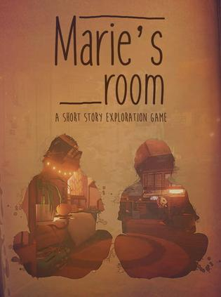
玩过 玛丽的房间 Marie’s Room ★★★★☆
ram disk上速度确实快，完全没有等待时间，感觉以后可以考虑搞个几百g内存的ram disk来玩了。游戏就是简单的解密，找两个密码结束，简单的故事，适合打发时间。
2020-02-27 10:14:09
豆瓣原页
在玩 玛丽的房间 Marie’s Room
找了个小游戏装在ram disk上试试
2020-02-27 00:21:26
豆瓣原页
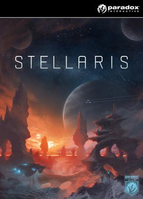
想玩 群星 Stellaris
gamkr又给我种草
2020-02-26 21:34:15
豆瓣原页
看过 叶问4：完结篇 / 葉問4：完結篇 ★★★★★
这部电影难得拍得过分真实。。。种族歧视，唐人街霸，想要圆月亮真没必要出国
2020-02-23 01:28:41
豆瓣原页
想玩 沙耶之歌 沙耶の唄
无数次纠结玩不玩这个游戏，最后决定战术性mark
2020-02-23 00:33:35
豆瓣原页
想看 关于莉莉周的一切 / リリイ·シュシュのすべて
从几年前喜欢的纯音乐《Sight》找来
2020-02-22 11:49:30
豆瓣原页
看过 流感 / 감기 ★★★☆☆
这个女主是真讨厌，看到这个女主后面再怎么洗也洗不白 =。= 韩国敢拍是真的，什么灭绝人性的操作都可以拍出来
2020-02-22 10:58:56
豆瓣原页
想看 流行病：如何预防流感大爆发 / Pandemic: How to Prevent an Outbreak
等我回去了把奈菲续回来
2020-02-22 10:57:48
豆瓣原页
看过 传染病 / Contagion ★★★★☆
赞同排第一的评论；初看不知片中意，再看已是片中人
2020-02-20 13:34:48
豆瓣原页
玩过 刀剑2 ★★★☆☆
小时候就经常看到这个名字，肺炎时期闲来玩一下，卡得不行劝退
2020-02-20 11:38:29
豆瓣原页
玩过 QQ堂 ★★★★★
OK 安装一下把我弄蓝屏了。。小时候杨建坤还帮我代练来着，因为我家没宽带，只能在学校机房玩，机器的关卡一直是最喜欢的，虽说是抄泡泡堂的，但是创新比泡泡堂做的足
2020-02-18 15:46:13
豆瓣原页
想看 你 第一季 / You Season 1
2020-02-18 15:43:18
豆瓣原页
想看 副本 第一季 / Altered Carbon Season 1
2020-02-16 13:07:14
豆瓣原页
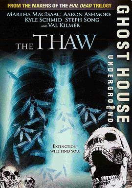
看过 解冻 / The Thaw ★★★☆☆
成本很低的恶心片，不过设定很新颖，然后我们也确实不怎么care全球变暖，灾难还有多远？
2020-02-15 18:51:59
豆瓣原页
想看 继承之战 第一季 / Succession Season 1
2020-02-15 18:51:31
豆瓣原页
想看 肤色 / Skin
2020-02-15 18:04:57
豆瓣原页
想看 解冻 / The Thaw
不是想看韩国的那个。。。是这个
2020-02-15 11:41:05
豆瓣原页
想看 解冻 해빙 (2017)
2020-02-10 15:15:19
豆瓣原页
想看 寄生虫 / 기생충
2020-02-09 18:58:53
豆瓣原页
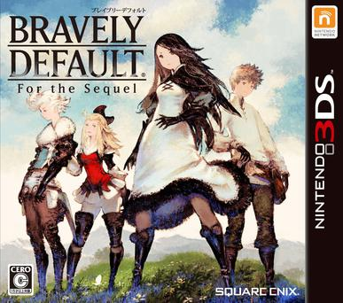
想玩 勇气默示录 完全版 ブレイブリーデフォルト フォーザ・シークウェル
玩完八方旅人 mark一下这个出自同组的系列
2020-02-09 12:43:19
豆瓣原页
想看 流感 / 감기
2020-02-09 11:47:14
豆瓣原页
在玩 发现之旅：古埃及 Discovery Tour by Assassin’s Creed: Ancient Egypt
最近宅在国内的家里，突然想起来老电脑上这个游戏还在，我要不要继续来玩玩呢？纠结一下
2020-02-09 11:46:23
豆瓣原页
玩过 几何冲刺 Geometry Dash ★★★★★
音乐游戏是不准备做了，确切的说以后应该也不会想做游戏了，可能之后做些demo之类的玩玩，这个事情真的需要用爱来发电 ┑(￣Д ￣)┍ 这个游戏解锁了云存档之后就搁置了。想起来个有趣的事情，之前在阿德工作的时候，我手机铃声是第一关的音乐，有一次接完电话，我manager问我铃声是geometry dash吧？我说是啊，你也玩过啊！他说他孩子经常在家玩 噗
2020-02-09 11:41:51
豆瓣原页
 玩过 剑侠情缘 ★★★☆☆
玩过 剑侠情缘 ★★★☆☆
还是有点玩不下去了，网上找的攻略和我玩的版本剧情对不上，卡关了于是。现在看来操作有点反人类。不过可以看出来当时是为了节约工作量而为之。总体来说，也算是找到了童年的回忆，很满足了！ // 小时候玩过，当时卡在出城的山里，这回不到30秒就出了山 不过感觉上世纪的游戏现在有点难打了，最气人的就是存档键在读档键下面，读档没有提示，阿西吧，按得快丢了好几个档
2020-02-09 11:38:52
豆瓣原页
玩过 未知作品 ★★★★☆
要不是这个脑残片（NCP），根本不会觉得这个游戏设计的有多精妙！
2020-02-09 11:25:31
豆瓣原页
上传了1张照片到 歧路旅人 OCTOPATH TRAVELER 的 相册
2020-02-09 11:23:50
豆瓣原页
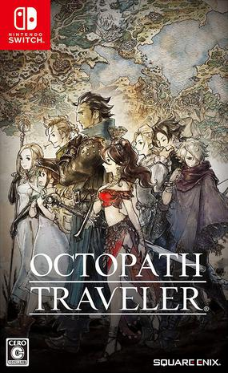
玩过 歧路旅人 オクトパストラベラー ★★★★★
多亏肺炎，和澳大利亚zf的禁令，我才有时间被关在国内通关这个游戏。真的是个好游戏，剧情、场景、音乐都跳不出来毛病，玩法也是很棒！像素游戏也可以3d建模，做的真的是太棒了！SE真香！我来想想下一个玩什么游戏
2020-01-26 00:10:59
豆瓣原页
看过 大明风华 ★★★★★
断断续续看的，能把石灰吟演到这个地步，五星定了
2020-01-25 21:57:52
豆瓣原页
看过 囧妈 ★★★☆☆
很失望，本来以为可以从头笑到尾的，结果大家一起看场面一度十分尴尬。风景很好看，何不拍成纪录片🙃 诶，现在安徽电影院都关了，我的京紫还没看！
2020-01-21 09:26:03
豆瓣原页
想看 传染病 / Contagion
2020-01-20 23:39:09
豆瓣原页
玩过 奥日与黑暗森林：决定版 Ori and the Blind Forest: Definitive Edition ★★★★★
设计得太好玩了吧，画面特别精致，尤其是粒子效果
2020-01-20 22:38:38
豆瓣原页
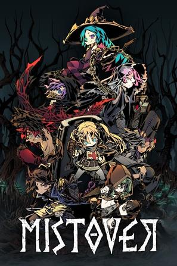
玩过 漩涡迷雾 Mistover ★★★★☆
感觉就是黑暗地牢的简化版，还是玩黑暗地牢吧
2020-01-19 20:15:57
豆瓣原页
想看 唐人街探案3
2020-01-19 20:15:51
豆瓣原页
想看 囧妈
2020-01-19 20:07:57
豆瓣原页
看过 星球大战9：天行者崛起 / Star Wars: The Rise of Skywalker ★★★★★
看的第一部星战，真好看，在合肥包场了 hhh 还好没下映，回头抓紧看京紫
2020-01-14 17:49:28
豆瓣原页
想看 这个勇者明明超强却过分慎重 第二季 / 慎重勇者～この勇者が俺TUEEEくせに慎重すぎる～ 2期
2020-01-14 17:49:02
豆瓣原页
看过 这个勇者明明超强却过分慎重 / 慎重勇者～この勇者が俺TUEEEくせに慎重すぎる～ ★★★★★
跨个年，忘记看最后一集了，赶紧补完，没有发糖不开心，等下一季
2020-01-14 17:11:36
豆瓣原页
想看 国土安全 第一季 / Homeland Season 1
2020-01-14 17:07:25
豆瓣原页
想看 边境安全：澳洲 / Border Security: Australia’s Front Line
2020-01-12 22:46:23
豆瓣原页
看过 变身特工 / Spies in Disguise ★★★★☆
包河区万达，近些年第一次在国内看电影，还挺搞笑的，尤其是鸽王的概念
2020-01-06 08:48:34
豆瓣原页
看过 勇敢者游戏2：再战巅峰 / Jumanji: The Next Level ★★★★☆
前天避暑在chatswood看的，确实感觉weakness没有很好地体现出来啊
2020-01-01 11:56:45
豆瓣原页
看过 丧尸乐园 / Zombieland ★★★☆☆
第二部比第一部精彩 that was very funny
2020-01-01 11:55:42
豆瓣原页
想玩 星球大战 绝地：陨落的武士团 Star Wars Jedi: Fallen Order
2019-12-29 19:12:58
豆瓣原页
 看过 海角七号 / 海角七號 ★★★★★
看过 海角七号 / 海角七號 ★★★★★
本来是通过音乐找到这个电影的，因为满分的主旋律，剧情差不到哪去，虽然细节欠打磨，剧情不是很连贯，很多没有解答的故事，比如说老tomoko是为啥跟孙女关系不好的，很好奇跟多跟信相关的故事呢
2019-12-29 16:28:59
豆瓣原页
看过 阳光中的青时雨 / 陽なたのアオシグレ ★★★★☆
太青涩了吧！
2019-12-28 21:22:22
豆瓣原页
看过 猎魔人 第一季 / The Witcher Season 1 ★★★★★
游戏三部全买了在吃灰，电视剧直接看完了，太过瘾！看评论说游戏更棒，是时候填坑了
2019-12-28 21:20:33
豆瓣原页
 想看 猎魔人 第二季 / The Witcher Season 2
想看 猎魔人 第二季 / The Witcher Season 2
2019-12-27 20:59:05
豆瓣原页
在看 猎魔人 第一季 / The Witcher Season 1 ★★★★★
2019-12-27 19:28:32
豆瓣原页
看过 消失的爱人 / Gone Girl ★★★★☆
太吓人了吧 =。= 怎么活啊遇到这种人
2019-12-27 15:57:54
豆瓣原页
看过 中国机长 ★★☆☆☆
看过Air Crash Investigation和Captain Sally之后，只能说电影真的不好看。这个故事本可以说的、拍的很棒，可惜编剧和导演功力不够。而且，为什么空难片没有说发生原因？？？这个拍的太肤浅了感觉，编剧做的功课太少了啊
2019-12-27 13:17:50
豆瓣原页
想看 中国机长
2019-12-27 13:17:41
豆瓣原页
看过 我和我的祖国 ★★★★★
今天假期在家oncall，来一个电影连播吧。一系列感人的小故事，有这样的人存在，祖国不强大才怪呢！
2019-12-27 10:00:00
豆瓣原页
看过 蜂鸟计划 / The Hummingbird Project ★★★★☆
感觉有生之年还是应该体验一下fin tech公司，很刺激
2019-12-27 06:55:03
豆瓣原页
想看 蜂鸟计划 / The Hummingbird Project
2019-12-26 07:08:49
豆瓣原页
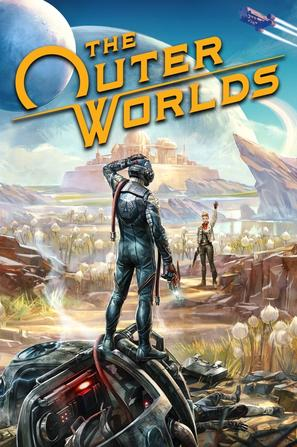
在玩 天外世界 The Outer Worlds ★★★★★
这个游戏也太好玩了吧
2019-12-25 13:38:14
豆瓣原页
玩过 夏洛克·福尔摩斯：恶魔之女 Sherlock Holmes: The Devil’s Daughter ★★★☆☆
not my type
2019-12-25 07:04:18
豆瓣原页
看过 丧尸乐园2 / Zombieland: Double Tap ★★★★☆
2019-12-23 07:39:14
豆瓣原页
想读 富人思维
读读投资人的故事
2019-12-23 07:37:53
豆瓣原页
想读 Money Master the Game
2019-12-23 07:36:48
豆瓣原页
想读 吸引力法则
2019-12-22 21:12:41
豆瓣原页
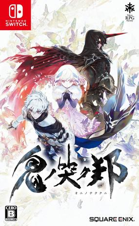
想玩 鬼哭邦 鬼ノ哭ク邦
2019-12-22 11:07:40
豆瓣原页
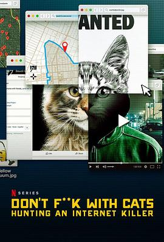
看过 别惹猫咪：追捕虐猫者 / Don’t F**k with Cats: Hunting an Internet Killer ★★★★★
凶手找到了，真的是疯子般的存在。。本来以为三集是三个故事，后来发现就是一个故事。电影最后的拷问很有意思，我们是不是助长了网络犯罪？虐待动物可耻，但可能并不是所有虐待都会有人注意到；发布到网上就不一样了，一下就扩散到了全球。谋杀案则不一样，它几乎总是会被警方注意到的。但是从虐待动物到谋杀的转变实际上是质的变化，如果我们少给他这些关注，是不是就好了呢？其实也不尽然，虐待动物肯定应该被抓起来，而且严厉惩罚，但是是在不受外界关注的情况下，这样犯罪代价就变高了。但是警察又经常有更多更重要的事情要做，很难因为虐待动物就跨国通缉。可能动物界也该有警察执法吧（误）。有一说一，肯定是有助长的，以后全球都像国内这样网络监管，肯定能灭绝这种事情😛
2019-12-22 08:50:28
豆瓣原页
在玩 剑侠情缘
小时候玩过，当时卡在出城的山里，这回不到30秒就出了山 不过感觉上世纪的游戏现在有点难打了，最气人的就是存档键在读档键下面，读档没有提示，阿西吧，按得快丢了好几个档
2019-12-22 05:53:45
豆瓣原页
在看 别惹猫咪：追捕虐猫者 / Don’t F**k with Cats: Hunting an Internet Killer ★★★★☆
holy shit… 竟然是这种片，最关键的是凶手没有被捕😰
2019-12-21 17:50:52
豆瓣原页
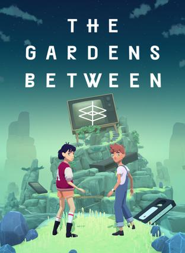
玩过 花园之间 The Gardens Between ★★★★☆
玩法很新颖，和纪念碑谷如出一辙，不过感觉最近玩小游戏容易腻
2019-12-21 16:37:43
豆瓣原页
在玩 花园之间 The Gardens Between
Xbox game pass
2019-12-21 16:28:09
豆瓣原页
玩过 未命名的鹅游戏 Untitled Goose Game ★★★★☆
脑洞有点大的解密游戏，玩了第二关撤了🤪 玩久了就有点腻
2019-12-21 14:01:55
豆瓣原页
想看 别惹猫咪：追捕虐猫者 / Don’t F**k with Cats: Hunting an Internet Killer
嘿嘿嘿
2019-12-21 11:08:57
豆瓣原页
看过 谎言的诞生 / The Invention of Lying ★★★★☆
以前貌似看过短平快的短视频，但是记不清了，这次耐飞上喂给我就看看咯。千言万语就感觉短视频真的毁作品 🤪
2019-12-20 23:38:23
豆瓣原页
看过 爱尔兰人 / The Irishman ★★★★☆
这是个不了解的时代，剧情很有意思，虽然三个半小时，仍然觉得节奏很快
2019-12-20 19:59:42
豆瓣原页
想看 消失的爱人 / Gone Girl
2019-12-20 19:17:24
豆瓣原页
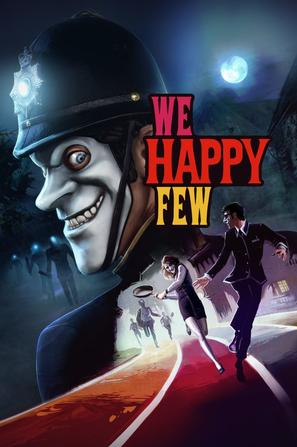
玩过 少数幸运儿 We Happy Few ★★★★☆
很有趣的设定，但是由于时间关系没有玩完，总体来说是个有亮点的设定，玩起来一般
2019-12-20 18:16:09
豆瓣原页
看过 利刃出鞘 / Knives Out ★★★★★
太爽了，无敌反转！
2019-12-17 17:53:52
豆瓣原页
想看 曼达洛人 第一季 / The Mandalorian Season 1
2019-12-16 19:24:26
豆瓣原页
想看 利刃出鞘 / Knives Out
2019-12-16 06:24:02
豆瓣原页
想看 爱尔兰人 / The Irishman
2019-12-15 20:01:25
豆瓣原页
在看 这个勇者明明超强却过分慎重 / 慎重勇者～この勇者が俺TUEEEくせに慎重すぎる～ ★★★★★
2019-12-15 19:16:36
豆瓣原页
看过 暗黑 第二季 / Dark Season 2 ★★★★★
我开始就在想他们怎么在一条时间线上穿梭的，果然就来可跨线穿越。过瘾+无限懵逼循环
2019-12-15 08:50:33
豆瓣原页
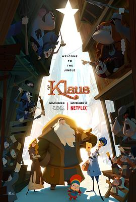
看过 克劳斯：圣诞节的秘密 / Klaus ★★★★★
The true act of good will always sparks another 很美、很暖的电影，也很触动。有时候会想，为什么西方会有感恩节（别跟我扯历史，我们也有类似的历史，但是我们没有感恩节），母亲节，父亲节，圣诞节这种以感恩为主题的节日，但是中国却极少，其实潜移默化，这些宗教带给了人们good will，这些信仰是纯洁无暇的榜样，类似于圣人。但我们从小的教育让我们没有这些信仰，榜样都是人，甚至是身边的人，人非圣贤，学到好的也必然学到了不好的，榜样没有的，也就学不到。
2019-12-14 08:18:05
豆瓣原页
看过 你的孩子不是你的孩子 ★★★☆☆
看完了，第一集和最后一集还不错，其他的4倍速看完，感觉很没意思。话说这种一集一个故事的剧集可能只看第一集和最后一集是最有效率的。
2019-12-14 08:17:26
豆瓣原页
想看 克劳斯：圣诞节的秘密 / Klaus
2019-12-10 21:08:43
豆瓣原页
在看 你的孩子不是你的孩子 ★★★★★
黑镜的设定啊，很不错，奈飞上能开到前五集
2019-12-09 21:45:10
豆瓣原页
玩过 宝可梦 剑 ポケットモンスター ソード ★★★★☆
一周目通关，最后boss有点小难打啊 //已收集91个神奇宝贝，等盾玩家交换独占宝贝
2019-12-08 11:44:40
豆瓣原页
在看 暗黑 第二季 / Dark Season 2
2019-12-08 11:44:02
豆瓣原页
看过 暗黑 第一季 / Dark Season 1 ★★★★☆
尹同学洗脑推荐，前两集一脸懵逼，后面感觉题材还是很有意思的。最郁闷的是，画面真的好黑暗，我早上上班火车上看都很难看清楚画面
2019-12-07 21:24:03
豆瓣原页
在看 暗黑 第一季 / Dark Season 1
2019-12-03 15:45:00
豆瓣原页
看过 祖宗十九代 ★★★☆☆
2019-11-23 16:24:58
豆瓣原页
在玩 宝可梦 剑 ポケットモンスター ソード ★★★★☆
已收集91个神奇宝贝，等盾玩家交换独占宝贝
2019-11-23 16:22:45
豆瓣原页
看过 回魂夜 ★★★★☆
2019-11-17 08:45:59
豆瓣原页
在看 七龙珠 / ドラゴンボール
2019-11-16 10:15:16
豆瓣原页
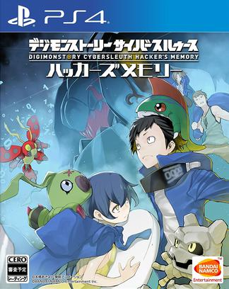
想玩 数码宝贝物语：网络侦探 骇客追忆 デジモンストーリー サイバースルゥース ハッカーズメモリー
2019-11-16 10:15:00
豆瓣原页
想玩 宝可梦 Let’s Go! 皮卡丘 ポケットモンスター Let’s Go! ピカチュウ
打折入一个
2019-11-16 10:14:49
豆瓣原页
想玩 宝可梦 盾 ポケットモンスター シールド (2019)
2019-11-16 10:13:23
豆瓣原页
想玩 宝可梦 剑 ポケットモンスター ソード
下周一到货，Amazon prime打折
2019-11-16 10:12:47
豆瓣原页
在玩 斯普拉遁 2 Splatoon 2
同样y借的卡带，准备去等一波online会员玩
2019-11-16 10:12:02
豆瓣原页
在玩 火焰之纹章 风花雪月 ファイアーエムブレム 風花雪月
y同学借的卡带，找回了小学时借卡带的时光！
2019-11-16 10:11:05
豆瓣原页
想玩 塞尔达传说 织梦岛 ゼルダの伝説 夢をみる島
2019-11-16 10:10:53
豆瓣原页
在玩 塞尔达传说 旷野之息 ゼルダの伝説 ブレス オブ ザ ワイルド
ns入门作
2019-11-16 07:33:15
豆瓣原页
想看 回魂夜
2019-11-16 07:33:04
豆瓣原页
想看 捉鬼敢死队 / Ghostbusters
聂胖推荐
2019-11-05 17:24:02
豆瓣原页
看过 隐私大盗 / The Great Hack ★★★★☆
看了之后才意识到中国的技术有多么超前
2019-11-04 18:44:37
豆瓣原页
看过 终结者：黑暗命运 / Terminator: Dark Fate ★★★★★
非常过瘾！打斗和设定都非常爽快，这次那固态金属和液态金属都整合起来了，太帅了！不过感觉应该是最后一部了，收割一波情怀，真香
2019-11-01 15:35:01
豆瓣原页
想看 这个勇者明明超强却过分慎重 / 慎重勇者～この勇者が俺TUEEEくせに慎重すぎる～